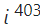

Números complexos são o conjunto de números formados por uma parte real e uma parte imaginária, em que a parte imaginária corresponde à raiz de um número negativo.
Os números complexos surgem a partir da necessidade de resolução de
equações que possuem
raiz de números negativos, o que, até então, não era possível de
resolver-se trabalhando
com
os números reais. Os números complexos podem ser representados de três formas: a
forma
algébrica (z = a + bi), composta por uma parte real a e uma parte imaginária b;
a forma
geométrica, representada no plano complexo conhecido também como plano de
Argand-Gauss; e a
sua forma trigonométrica, conhecida também como forma polar. Com base na
sua representação,
como estamos trabalhando com um conjunto numérico, os números complexos possuem
operações
bem definidas: adição, subtração, multiplicação, divisão e potenciação.
Pela representação geométrica no plano complexo, definimos também o módulo (representado
por
|z|) de um número complexo — que é a distância do ponto que representa o número complexo
até
a origem —, e o que é o argumento de um número complexo — que é o ângulo formado entre o
eixo horizontal e o seguimento que liga a origem ao ponto que representa o número
complexo.
Na matemática, a ampliação de um conjunto numérico para um novo conjunto, ao longo da
história, foi algo bastante comum. Acontece que, nesse decorrer, a matemática
desenvolveu-se, e então, para atender as necessidades da época, foi
percebido que
existiam
números que não pertenciam ao conjunto numérico a que se referia. Foi assim com o
surgimento
dos conjuntos numéricos dos inteiros, dos racionais, dos irracionais e dos reais, e não
foi
diferente quando houve a necessidade de ampliação do conjunto dos números reais para o
dos
números complexos.
Ao tentarmos resolver equações do segundo grau, é bastante comum que
encontremos a raiz
quadrada de um número negativo, o que é impossível de ser resolvido no conjunto
dos
números
reais, por isso a necessidade dos números complexos. O início do estudo desses números
recebeu contribuições de matemáticos importantes, como Giralmo Cardono, porém o conjunto
deles foi formalizado por Gauss e Argand.
Ao tentar-se resolver uma equação do segundo grau, como x² = –25, muitas vezes ela era dita
como sem solução. Não obstante, na tentativa de algebrizar, surgiu então a
representação
algébrica, que possibilita a realização de operações com esses números, ainda
que não se
consiga calcular a raiz quadrada de um número negativo.
Para facilitar a resolução das situações em que se trabalha com a raiz quadrada de um
número
negativo, foi definida a unidade imaginária.
Então, analisando-se a equação apresentada x² = -25, temos que:
Desse modo, as soluções para a equação são -5i e 5i.
Para definir-se a forma algébrica, foi utilizada a letra i,
conhecida como unidade
imaginária de um número complexo. Um número complexo é representado por:
z = a + bi
Em que a e b são números reais.
a: parte real, indicada por a = Re(z);
b: parte imaginária, indicada por Im(z);
i: unidade imaginária.
a) 2 + 3i
b) -1 + 4i
c) 5 – 0,2i
d) -1 – 3i
Quando a parte real é nula, o número é conhecido como imaginário puro, por
exemplo,
–5i e
5i
são imaginários puros por não possuírem parte real.
Quando a parte imaginária é nula, o número complexo é também um número real.
Como todo conjunto numérico, as operações precisam estar bem definidas, logo, é possível realizar-se as quatro operações básicas dos números complexos levando-se em consideração a forma algébrica apresentada.
Para realizarmos a adição de dois números complexos z1 e
z2, faremos a
soma
da parte real de z1 e z2 e a soma da parte imaginária,
respectivamente.
Seja:
z1 = a + bi
z2 = c + di
Realização da soma de z1 e z2.
z1 = 2 + 3i
z2 = 1 + 2i
Realização da soma de z1 e z2.
z1 = 5 – 2i
z2 = – 3 + 2i
Antes de falarmos sobre subtração, precisamos definir o que é o
inverso de
um número complexo, ou seja, z = a + bi. O inverso de z, representado
por –z, é o
número
complexo –z = –a – bi.
Para realizarmos a subtração entre z1 e –z2, assim como na adição,
faremos a
subtração
entre
as partes reais e entre as partes imaginárias separadamente, porém é
necessário
compreender-se que –z2 é o inverso de um número complexo, o que torna necessário
a
realização do jogo de sinal.
Realização da subtração de z1 e z2.
z1 = 2 + 3i
z2 = 1 + 2i
Realização da subtração de z1 e z2.
z1 = 5 – 2i
z2 = – 3 + 2i
Antes de falarmos em multiplicação, precisamos entender a potência da
unidade imaginária. Na busca por um método para calcular-se potências de , é necessário
perceber que essas potências comportam-se de forma cíclica. Para isso, vamos calcular
algumas potências de i.
Acontece que as próximas potências nada mais são que a sua repetição, note que:
Ao continuarmos a calcular as potências, as respostas sempre serão elementos do conjunto
{1,i,–1,–i}, então, para encontrarmos uma potência da unidade , faremos a divisão de n (o
expoente) por 4, e o resto dessa divisão (r = { 0, 1, 2, 3}) será o novo expoente de
i.
Calculo de
Ao fazermos a divisão de 25 por 4, o quociente será 6 e o resto será igual a 1. Então temos
que:
= i¹ = i
Cálculo de 
Ao dividirmos 403 por 4, o quociente será 100, pois 100 · 4 = 400, e o resto será 3, então
temos que:
Os números complexos são números que apresentam a forma reto z espaço igual a espaço reto a espaço mais espaço bi, onde a representa a parte real de z e a parte imaginária corresponde a b, sendo i a unidade imaginária.
Dados os números complexos z1 = (2,–1) e z2 = (3, x), sabe-se que o produto entre z1 e z2 é um número real. Então x é igual a:
A) -6
B) -3/2
C) 0
D) 3/2
E) 6
Se i é o número complexo cujo quadrado é igual a -1, então o valor de 5i 227 + i 6 – i 13 é igual a:
A) i + 1
B) 4i-1
C) -6i-1
D) -6i
Se u = 1 – 2i é um número complexo e seu conjugado, então z = u² + 3 é igual a:
A) – 6 – 2i
B) 2i
C) – 6
D) 8 + 2i
E) – 6 + 2i
Qual o resultado obtido com a realização da soma e da subtração, respectivamente, dos números complexos z1 = 3 + i e z2 = 1 + 2i?
A) 2 + 3i e 1 – i
B) 3 + 2i e -4 – i
C) 4 + 3i e 2 – i
D) 1 + 2i e -3 – i
Qual a forma algébrica de z no caso 3z = z - (- 8 + 6i)?
A) z = 4 – 2i
B) z = 4 – 3i
C) z = 2 – 2i
D) z = 1 – 2i
Alternativa D
Para que o produto seja um número real, então a parte imaginária é igual a zero.
Escrevendo esses números na forma algébrica, temos que:
z1 = 2 – 1i e z2 = 3 + xi
z1 · z2 = (2 – 1i) (3 + xi)
z1 · z2 = 6 + 2xi –3i – xi ²
z1 · z2 = 6 + 2xi –3i + x
z1 · z2 = 6+ x + (2x – 3)i
Como nosso interesse é que a parte imaginária seja igual a zero, então resolveremos 2x – 3 = 0
2x - 3 = 0
2x = 3
x = 3/2
Alternativa C
Para resolver essa expressão, é necessário encontrar o resto de cada um dos números na divisão por 4.
227 : 4 resulta em quociente 56 e resto 3.
i 227 = i 3 = –i
6 : 4 resulta em quociente 1 e resto 2.
i 6 = i 2 = –1
13 : 4 resulta em quociente 3 e resto 1.
i 13 = i1 = i
Então temos que:
5i 227 + i 6 – i 13
5 (–i) + (–1) – i
–5i –1 – i
–6i – 1
Alternativa B
Primeiramente, devemos calcular o valor de u².
Se u = 1 – 2i então o seu conjunto é = 1 + 2i e 3 = 3.(1+2i) = 3+6i
Agora, calculamos z = u² + 3
Portanto, o resultado é 2i, conforme a letra b.
Alternativa C
Operação de soma:
z1 + z2 = (a + c, b + d)
Na forma algébrica, temos:
(a + bi) + (c + di) = (a + c) + (b + d)i
Portanto:
Operação de subtração:
z1 – z2 = (a – c, b – d)
Na forma algébrica, temos:
(a + bi) – (c + di) = (a – c) + (b – d)i
Portanto:
Sendo assim, a soma e a subtração dos números complexos z1 = 3 + i e z2 = 1 + 2i são, respectivamente, 4 + 3i e 2 - i.
Alternativa B
A forma algébrica de z é utilizada para representar um número complexo através da fórmula:
z = x + yi
Onde:
x é a parte real de z
y é a parte imaginária de z
Portanto:
Logo, a forma algébrica de z no caso 3z = z - (-8 + 6i) é z = 4 – 3i.